DEMO_febio_0059_face_mask_loading
Below is a demonstration for:
- Building triangulated surface geometry for a face
- Meshing the face using pentahedral elements
- Building model of a tube
- Defining the boundary conditions
- Coding the febio structure
- Running the model
- Importing and visualizing results
Contents
- Keywords
- Control parameters
- Load face geometry
- Remeshing surface
- Centre on nose and rotate to face face looking down Z-axis
- Construct mask rim curve
- Join and merge rim surfaces
- Join and merge mask body components
- Join node sets
- Define contact surfaces
- Define boundary conditions
- Defining the FEBio input structure
- Quick viewing of the FEBio input file structure
- Exporting the FEBio input file
- Running the FEBio analysis
- Import FEBio results
Keywords
- febio_spec version 4.0
- febio, FEBio
- face
- contact, sliding, friction
- pentahedral elements, penta6
- static, solid
- hyperelastic, Ogden
- displacement logfile
clear; close all; clc;
Plot settings
fontSize=15; faceAlpha1=1; faceAlpha2=0.3; markerSize1=15; markerSize2=10; lineWidth=2; cMap=spectral(250);
Control parameters
% Path names defaultFolder = fileparts(fileparts(mfilename('fullpath'))); savePath=fullfile(defaultFolder,'data','temp'); % Defining file names febioFebFileNamePart='tempModel'; febioFebFileName=fullfile(savePath,[febioFebFileNamePart,'.feb']); %FEB file name febioLogFileName=fullfile(savePath,[febioFebFileNamePart,'.txt']); %FEBio log file name febioLogFileName_disp=[febioFebFileNamePart,'_disp_out.txt']; %Log file name for exporting displacement febioLogFileName_force=[febioFebFileNamePart,'_force_out.txt']; %Log file name for exporting force febioLogFileName_strainEnergy=[febioFebFileNamePart,'_energy_out.txt']; %Log file name for exporting strain energy density % Geometry parameters pointSpacingTissue=6; faceTissueThickness=6; pointSpacingMask=pointSpacingTissue/2; maskRimWidth=5; maskRimFilletRadius=6; maskDiscRadius1=25; maskDiscRadius2=maskDiscRadius1+4; maskDiscOffset=25; bezierTangency=0.1; distInclude=40; %Distance from mask to include face in FEA %Ray tracing parameters optionStructRayTrace.tolEps = 1e-6; optionStructRayTrace.triSide = 0; optionStructRayTrace.rayType = 'ray'; optionStructRayTrace.exclusionType = 'inclusive'; optionStructRayTrace.paired = 0; %Material parameters c1_tissue=1e-3; %Shear-modulus-like parameter m1_tissue=2; %Material parameter setting degree of non-linearity k_tissue=c1_tissue*100; %Bulk modulus c1_rim=c1_tissue*5; %Shear-modulus-like parameter m1_rim=2; %Material parameter setting degree of non-linearity k_rim=c1_rim*10; %Bulk modulus % FEA control settings numTimeSteps=15; %Number of time steps desired max_refs=35; %Max reforms max_ups=0; %Set to zero to use full-Newton iterations opt_iter=10; %Optimum number of iterations max_retries=5; %Maximum number of retires dtmin=(1/numTimeSteps)/100; %Minimum time step size dtmax=(1/numTimeSteps); %Maximum time step size symmetric_stiffness=0; min_residual=1e-20; runMode='external'; %Boundary condition parameters initialOffset=0; displacementMagnitude_z=-2-initialOffset; %Displacement applied %Contact parameters contactPenalty=10; laugon=0; minaug=1; maxaug=10; fric_coeff=0.5;
Load face geometry
testCase=1; switch testCase case 1 %Load surface model [Ff,Vf]=graphicsModels(9); %Surface markers V_markers=[65.51,49.94,217.14;... %Tip of the nose 66.44,54.79,259.81;... %Nose between eyes 53.81,115,263.39;... %Right eye outer corner 126.5,46.62,269.75;... %Left eye outer corner 85.67,69.44,194.1;... %Middle of mounth 98.39,80.38,158]; %Bottom of chin case 2 %Load surface model [Ff,Vf]=graphicsModels(13); %Surface markers V_markers=[3.50162,-181.107,-8.09110;... %Tip of the nose 1.51627,-159.171,30.4679;... %Nose between eyes -43.2473,-139.003,24.6407;... %Right eye outer corner 48.4245,-136.490,25.3913;... %Left eye outer corner 4.11905,-167.594,-36.9600;... %Middle of mounth 2.85290,-161.802,-73.4644]; %Bottom of chin end distEyes=sqrt(sum((V_markers(3,:)-V_markers(4,:)).^2,2));
Remeshing surface
optionStruct_remesh.pointSpacing=pointSpacingTissue; %Set desired point spacing optionStruct_remesh.disp_on=0; % Turn off command window text display [Ff,Vf]=ggremesh(Ff,Vf,optionStruct_remesh);
ny=vecnormalize(V_markers(2,:)-V_markers(6,:)); nx=vecnormalize(V_markers(4,:)-V_markers(3,:)); nz=vecnormalize(cross(nx,ny)); nx=vecnormalize(cross(ny,nz)); Q=[nx;ny;nz]';
% cFigure; hold on; % gpatch(Ff,Vf,'w','none',1); % % plotV(V_markers,'r.','MarkerSize',35); % % text(V_markers(:,1)+4,V_markers(:,2),V_markers(:,3),{'1','2','3','4','5','6'},'FontSize',25); % % quiverTriad(V_markers(1,:),Q,100); % axisGeom; camlight headlight; % colormap(spectral(250)) % gdrawnow;
cFigure; hold on; gpatch(Ff,Vf,'w','none',0.5); plotV(V_markers,'r.','MarkerSize',35); text(V_markers(:,1)+4,V_markers(:,2),V_markers(:,3),{'1','2','3','4','5','6'},'FontSize',25); quiverTriad(V_markers(1,:),Q,100); axisGeom; camlight headlight; colormap(spectral(250)) gdrawnow;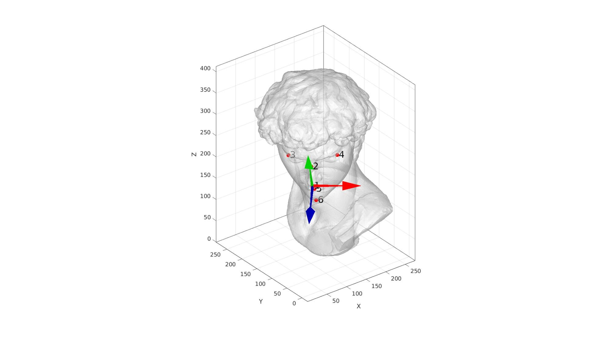
Centre on nose and rotate to face face looking down Z-axis
Vf=Vf-V_markers(1,:);
Vf=Vf*Q;
V_markers=V_markers-V_markers(1,:);
V_markers=V_markers*Q;
nz=[0 0 1];%nz*Q;
cFigure; hold on; gpatch(Ff,Vf,'w','none',0.5); plotV(V_markers,'r.','MarkerSize',35); text(V_markers(:,1)+6,V_markers(:,2),V_markers(:,3)+15,{'1','2','3','4','5','6'},'FontSize',25); axisGeom; camlight headlight; colormap(spectral(250)) gdrawnow;

Construct mask rim curve
V1=V_markers(1,[1 2]); V2=V_markers(2,[1 2]); V3=V_markers(3,[1 2]); V4=V_markers(4,[1 2]); V5=V_markers(5,[1 2]); V6=V_markers(6,[1 2]); pp1=0.4*V1+0.6*V2; pp2=0.6*V1+0.4*V3; pp3=V3-[0 V3(2)]+[0 0.5*V5(2)+0.5*V1(2)]; pp4=[0.3*V2(1)+0.8*V3(1) 0.5*V5(2)+0.5*V6(2)]; pp5=V6; pp6=[0.3*V2(1)+0.8*V4(1) 0.5*V5(2)+0.5*V6(2)]; pp7=V4-[0 V4(2)]+[0 0.5*V5(2)+0.5*V1(2)]; pp8=0.6*V1+0.4*V4; V_rim_points=[pp1;pp2;pp3;pp4;pp5;pp6;pp7;pp8]; V_rim_points(:,3)=0; [V_rim_points,indFaceIntersect]=traceToSurf(V_rim_points,-nz,Ff,Vf,optionStructRayTrace); numRimControlPoints=size(V_rim_points,1); V_rim_curve=evenlySpaceCurve(V_rim_points,pointSpacingMask,'pchip',1); V_rim_curve=traceToSurf(V_rim_curve,-nz,Ff,Vf,optionStructRayTrace); numPointsRimCurve=size(V_rim_curve,1); Ne1=vecnormalize([V_rim_points(2:end,:); V_rim_points(1,:)]-V_rim_points(1:end,:)); Ne2=vecnormalize(V_rim_points - [V_rim_points(end,:); V_rim_points(1:end-1,:)]); Ne=vecnormalize(0.5*Ne1+0.5*Ne2); Nf=patchNormal(Ff,Vf); %Normal directions Nff=Nf(indFaceIntersect(:,2),:); N_rim_points=vecnormalize(cross(Nff,Ne)); V_rim_points1=V_rim_points-N_rim_points.*maskRimWidth/2; V_rim_points2=V_rim_points+N_rim_points.*maskRimWidth/2;
cFigure; hold on; gpatch(Ff,Vf,'w','none',0.5); plotV(V_markers,'r.','MarkerSize',25); text(V_markers(:,1)+4,V_markers(:,2),V_markers(:,3),{'1','2','3','4','5','6'},'FontSize',25); plotV(V_rim_points,'k.','MarkerSize',25); plotV(V_rim_points1,'b.','MarkerSize',25); plotV(V_rim_points2,'g.','MarkerSize',25); quiverVec(V_rim_points,N_rim_points,maskRimWidth/2,'y'); quiverVec(V_rim_points,-N_rim_points,maskRimWidth/2,'y'); axisGeom; camlight headlight; view(2); gdrawnow;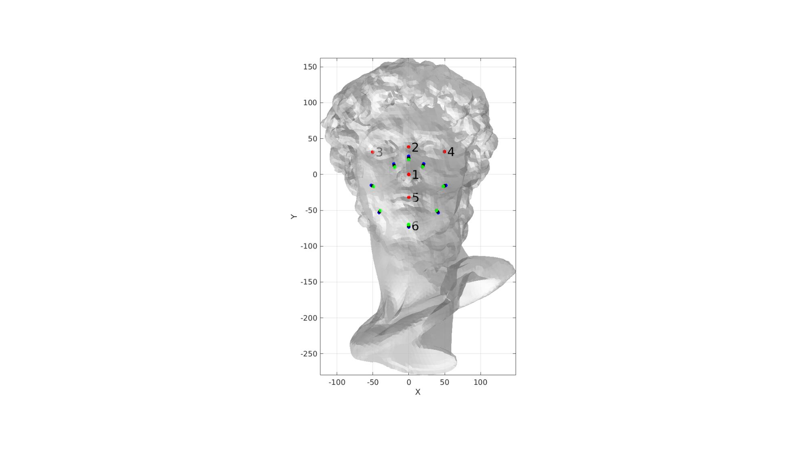
[~,indClose]=minDist(V_markers,Vf); d=meshDistMarch(Ff,Vf,indClose([1 5])); [~,indClose]=minDist(V_rim_curve,Vf); d_rim_curve=meshDistMarch(Ff,Vf,indClose); d_markers_max=max(d(indClose)); logicCloseVertices= d<=d_markers_max | d_rim_curve<distInclude; logicCloseFaces= any(logicCloseVertices(Ff),2); logicCloseFaces=triSurfLogicSharpFix(Ff,logicCloseFaces); [Fs,Vs]=patchCleanUnused(Ff(logicCloseFaces,:),Vf); ns=vecnormalize(mean(patchNormal(Fs,Vs))); [Q]=pointSetPrincipalDir(Vs); nz=Q(:,3)'; if dot(nz,ns)<1 nz=-nz; end ny=vecnormalize(V_markers(2,:)-V_markers(1,:)); nx=cross(ny,nz); ny=cross(nz,nx); Q=[nx;ny;nz]'; Ffc=Ff(~logicCloseFaces,:);
cFigure; hold on; gpatch(Ff,Vf,d,'k',0.5); gpatch(Ff(logicCloseFaces,:),Vf,'none','b',1,2); plotV(V_markers,'r.','MarkerSize',25); plotV(V_rim_points,'k.','MarkerSize',15); plotV(V_rim_curve,'k-','LineWidth',3); axisGeom; camlight headlight; colormap(spectral(250)) gdrawnow;

cFigure; hold on; gpatch(Ff,Vf,'w','none',0.5); % gpatch(Ff(logicCloseFaces,:),Vf,'none','b',1,2); plotV(V_markers,'r.','MarkerSize',25); plotV(V_rim_points,'k.','MarkerSize',15); plotV(V_rim_curve,'k-','LineWidth',3); axisGeom; camlight headlight; colormap(spectral(250)) gdrawnow;

cFigure; hold on; gpatch(Ff,Vf,'w','none'); gpatch(Fs,Vs,'w','b'); % patchNormPlot(Fs,Vs); plotV(V_markers,'r.','MarkerSize',25); % quiverTriad(V_markers(1,:),Q,50); axisGeom; camlight headlight; % colormap(viridis(2)); icolorbar; gdrawnow;

Ebs=patchBoundary(Fs); indBoundaryCurve=edgeListToCurve(Ebs); indBoundaryCurve=indBoundaryCurve(1:end-1)'; [~,~,Ns]=patchNormal(Fs,Vs); Vs2=Vs-Ns*faceTissueThickness; Fs2=Fs; Vsc=Vs2(indBoundaryCurve,:);%-Ns(indBoundaryCurve,:)*layerThickness; [Fs2t,Vs2t]=regionTriMesh3D({Vsc},pointSpacingMask,0,'natural'); Vs2t_ori=Vs2t; indBoundary=unique(patchBoundary(Fs2t)); [~,indMap]=minDist(Vsc,Vs2t(indBoundary,:)); indBoundaryCurve_2t=indBoundary(indMap); indBoundaryCurve_2t=indBoundaryCurve_2t(:); Vs2t=traceToSurf(Vs2t,-nz,Fs2,Vs2,optionStructRayTrace); cParSmooth.n=3; cParSmooth.Method='HC'; cParSmooth.RigidConstraints=indBoundaryCurve_2t; Vs2t=patchSmooth(Fs2t,Vs2t,[],cParSmooth); numNodesThickness=ceil(faceTissueThickness./pointSpacingTissue); if numNodesThickness<2 numNodesThickness=2; end cParLoft.numSteps=numNodesThickness; cParLoft.closeLoopOpt=1; cParLoft.patchType='tri'; [Fss,Vss,ind1,ind2]=polyLoftLinear(Vs(indBoundaryCurve,:),Vs2t(indBoundaryCurve_2t,:),cParLoft); [Fb,Vb,Cb]=joinElementSets({Fs,Fs2t,Fss},{Vs,Vs2t,Vss}); [Fb,Vb]=mergeVertices(Fb,Vb);
cFigure; hold on; gpatch(Ffc,Vf,'w','none',0.5); gpatch(Fb,Vb,Cb,'k',0.5); % gpatch(Fs,Vs,'bw','k',1); % % gpatch(Fs2t,Vs2t_ori,'gw','g',0.5); % gpatch(Fs2t,Vs2t,'rw','k',1); % gpatch(Fss,Vss,'gw','k',1); % patchNormPlot(Fb,Vb); axisGeom; camlight headlight; colormap(spectral); icolorbar; gdrawnow;

Get inner mesh point between top and bottom at nose
Pn=triSurfRayTrace(V_markers(1,:),-nz,Fb,Vb,optionStructRayTrace); Pn=mean(Pn,1);
cFigure; hold on; %gpatch(Ffc,Vf,'w','none',0.5); gpatch(Fb,Vb,Cb,'k',1); plotV(Pn,'r.','MarkerSize',25); % patchNormPlot(Fb,Vb); axisGeom; camlight headlight; colormap(spectral); icolorbar; gdrawnow;

%Create tetgen input structure inputStruct.stringOpt='-pq1.2AaY'; %Options for tetgen inputStruct.Faces=Fb; %Boundary faces inputStruct.Nodes=Vb; %Nodes of boundary inputStruct.faceBoundaryMarker=Cb; inputStruct.regionPoints=Pn; %Interior points for regions inputStruct.holePoints=[]; %Interior points for holes inputStruct.regionA=tetVolMeanEst(Fb,Vb); %Desired tetrahedral volume for each region % Mesh model using tetrahedral elements using tetGen [meshOutput]=runTetGen(inputStruct); %Run tetGen
%%%%%%%%%%%%%%%%%%%%%%%%%%%%%%%%%%%%%%%%%%%%% --- TETGEN Tetrahedral meshing --- 27-Apr-2023 16:34:14 %%%%%%%%%%%%%%%%%%%%%%%%%%%%%%%%%%%%%%%%%%%%% --- Writing SMESH file --- 27-Apr-2023 16:34:14 ----> Adding node field ----> Adding facet field ----> Adding holes specification ----> Adding region specification --- Done --- 27-Apr-2023 16:34:14 --- Running TetGen to mesh input boundary--- 27-Apr-2023 16:34:14 Opening /mnt/data/MATLAB/GIBBON/data/temp/temp.smesh. Delaunizing vertices... Delaunay seconds: 0.013751 Creating surface mesh ... Surface mesh seconds: 0.004709 Recovering boundaries... Boundary recovery seconds: 0.008599 Removing exterior tetrahedra ... Spreading region attributes. Exterior tets removal seconds: 0.004921 Recovering Delaunayness... Delaunay recovery seconds: 0.00424 Refining mesh... 4040 insertions, added 280 points, 9506 tetrahedra in queue. 1345 insertions, added 66 points, 8189 tetrahedra in queue. 1793 insertions, added 56 points, 4853 tetrahedra in queue. 2390 insertions, added 91 points, 794 tetrahedra in queue. 3186 insertions, added 217 points, 6087 tetrahedra in queue. 4247 insertions, added 253 points, 1635 tetrahedra in queue. Refinement seconds: 0.148259 Smoothing vertices... Mesh smoothing seconds: 0.046542 Improving mesh... Mesh improvement seconds: 0.003576 Writing /mnt/data/MATLAB/GIBBON/data/temp/temp.1.node. Writing /mnt/data/MATLAB/GIBBON/data/temp/temp.1.ele. Writing /mnt/data/MATLAB/GIBBON/data/temp/temp.1.face. Writing /mnt/data/MATLAB/GIBBON/data/temp/temp.1.edge. Output seconds: 0.046706 Total running seconds: 0.281613 Statistics: Input points: 3031 Input facets: 6058 Input segments: 9087 Input holes: 0 Input regions: 1 Mesh points: 4217 Mesh tetrahedra: 16411 Mesh faces: 35851 Mesh faces on exterior boundary: 6058 Mesh faces on input facets: 6058 Mesh edges on input segments: 9087 Steiner points inside domain: 1186 --- Done --- 27-Apr-2023 16:34:15 %%%%%%%%%%%%%%%%%%%%%%%%%%%%%%%%%%%%%%%%%%%%% --- Importing TetGen files --- 27-Apr-2023 16:34:15 --- Done --- 27-Apr-2023 16:34:15
Access mesh output structure
E_face=meshOutput.elements; %The elements V=meshOutput.nodes; %The vertices or nodes F=meshOutput.faces; %Element faces (all) CE=meshOutput.elementMaterialID; %Element material or region id Fb=meshOutput.facesBoundary; %The boundary faces Cb=meshOutput.boundaryMarker; %The boundary markers
Visualization
hf=cFigure; subplot(1,2,1); hold on; title('Input boundaries','FontSize',fontSize); hp(1)=gpatch(Fb,V,Cb,'k',faceAlpha1); hp(2)=plotV(Pn,'r.','MarkerSize',markerSize1); legend(hp,{'Input mesh','Interior point(s)'},'Location','NorthWestOutside'); axisGeom(gca,fontSize); camlight headlight; colormap(cMap); icolorbar; hs=subplot(1,2,2); hold on; title('Tetrahedral mesh','FontSize',fontSize); % Visualizing using |meshView| optionStruct.hFig=[hf,hs]; meshView(meshOutput,optionStruct); hold on; plotV(Pn,'r.','MarkerSize',25); axisGeom(gca,fontSize); gdrawnow;

pp9=V_markers(5,:);% (0.1*V_markers(1,:)+0.9*V_markers(5,:)); t=linspace(0.5*pi,2.5*pi,numPointsRimCurve+1)'; t=t(1:end-1); Vcd1=maskDiscRadius1*[cos(t) sin(t) zeros(size(t))]; Vcd1=Vcd1+pp9; Vcd1(:,3)=maskDiscOffset; Vcd2=maskDiscRadius2*[cos(t) sin(t) zeros(size(t))]; Vcd2=Vcd2+pp9; Vcd2(:,3)=maskDiscOffset; % cFigure; hold on; gpatch(Fb,V,'w','none',0.5); plotV(V_markers,'r.','MarkerSize',50); text(V_markers(:,1)+4,V_markers(:,2),V_markers(:,3)+10,{'1','2','3','4','5','6'},'FontSize',25); plotV(V_rim_points,'k.','MarkerSize',35); plotV(V_rim_curve,'k-','LineWidth',6); plotV(Vcd1,'b-','LineWidth',6); plotV(Vcd2,'b-','LineWidth',6); axisGeom; camlight headlight; view(2); drawnow;

V_rim_curve1=evenlySampleCurve(V_rim_points1,numPointsRimCurve,'pchip',1); V_rim_curve2=evenlySampleCurve(V_rim_points2,numPointsRimCurve,'pchip',1); V_rim_curve1=traceToSurf(V_rim_curve1,[0 0 -1],Fb(Cb==1,:),V,optionStructRayTrace); V_rim_curve2=traceToSurf(V_rim_curve2,[0 0 -1],Fb(Cb==1,:),V,optionStructRayTrace);
cFigure; hold on; gpatch(Fb(Cb==1,:),Vb,'kw','none',0.5); % patchNormPlot(Fm,Vm); plotV(V_markers,'r.','MarkerSize',50); text(V_markers(:,1)+2,V_markers(:,2),V_markers(:,3),{'1','2','3','4','5','6'},'FontSize',25); plotV(V_rim_points,'k.','MarkerSize',35,'LineWidth',3); plotV(V_rim_curve,'k-','LineWidth',3); plotV(V_rim_points1,'g.','MarkerSize',35,'LineWidth',3); plotV(V_rim_curve1,'g-','LineWidth',3); plotV(V_rim_points2,'b.','MarkerSize',35,'LineWidth',3); plotV(V_rim_curve2,'b-','LineWidth',3); axisGeom; camlight headlight; view(2); drawnow;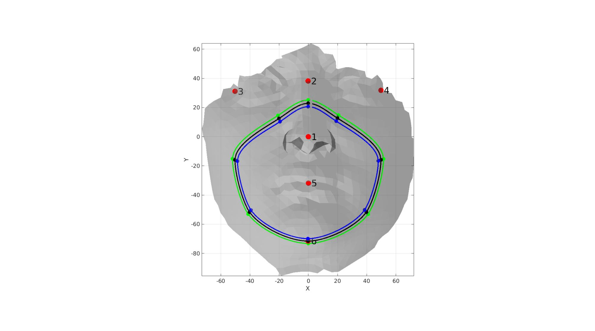
pointSpacingNow=mean(diff(pathLength(V_rim_curve1))); numNodStrip=ceil(maskRimWidth./pointSpacingNow); if numNodStrip<2 numNodStrip=2; end if iseven(numNodStrip) numNodStrip=numNodStrip+1; end cParLoft.numSteps=numNodStrip; cParLoft.closeLoopOpt=1; cParLoft.patchType='tri'; [Fm,Vm,indStart_Vm,indEnd_Vm]=polyLoftLinear(V_rim_curve1,V_rim_curve2,cParLoft); Fm=fliplr(Fm); indStart_Vm=fliplr(indStart_Vm); indEnd_Vm=fliplr(indEnd_Vm); [~,~,Nm]=patchNormal(Fm,Vm); Vm=traceToSurf(Vm,Nm,Fb(Cb==1,:),V,optionStructRayTrace);
cFigure; hold on; gpatch(Fb(Cb==1,:),Vb,'kw','none',0.5); gpatch(Fm,Vm,'rw','k',1,1); % patchNormPlot(Fm,Vm); % plotV(V_markers,'r.','MarkerSize',50); % text(V_markers(:,1)+4,V_markers(:,2),V_markers(:,3),{'1','2','3','4','5','6'},'FontSize',25); plotV(V_rim_points,'k.','MarkerSize',35,'LineWidth',3); plotV(Vm(indStart_Vm,:),'g-','LineWidth',3); plotV(Vm(indEnd_Vm,:),'b-','LineWidth',3); axisGeom; camlight headlight; view(2); drawnow;

[~,~,Nm]=patchNormal(Fm,Vm); pointSpacingNow=mean(diff(pathLength(Vm(indStart_Vm,:)))); nRim=ceil((pi/2*maskRimFilletRadius)/pointSpacingNow)+1; if nRim<4 nRim=4; end [Fr1,Vr1]=roundMesh(indStart_Vm,Vm,Nm,nRim,maskRimFilletRadius); [Fr2,Vr2]=roundMesh(indEnd_Vm,Vm,Nm,nRim,maskRimFilletRadius); indEnd_Vr1=size(Vr1)-numPointsRimCurve+1:1:size(Vr1); indEnd_Vr2=fliplr(indEnd_Vr1); [Fr1,Vr1]=quad2tri(Fr1,Vr1,'a'); [Fr2,Vr2]=quad2tri(Fr2,Vr2,'a');
cFigure; hold on; gpatch(Fb,V,'kw','none',0.5); gpatch(Fm,Vm,'rw','k',1,1); gpatch(Fr1,Vr1,'gw','k',1,1); gpatch(Fr2,Vr2,'bw','k',1,1); plotV(Vr1(indEnd_Vr1,:),'r-','LineWidth',3); plotV(Vr2(indEnd_Vr2,:),'b-','LineWidth',3); axisGeom; camlight headlight; view(2); drawnow;

pointSpacingNow=mean(diff(pathLength(Vr1(indEnd_Vr1,:)))); numNodStripTop=ceil((maskRimWidth+2*maskRimFilletRadius)./pointSpacingNow); if numNodStripTop<2 numNodStripTop=2; end if iseven(numNodStripTop) numNodStripTop=numNodStripTop+1; end cParLoft.numSteps=numNodStripTop; cParLoft.closeLoopOpt=1; cParLoft.patchType='tri'; [Ft,Vt,indCurve1_Vt,indCurve2_Vt]=polyLoftLinear(Vr1(indEnd_Vr1,:),Vr2(indEnd_Vr2,:),cParLoft); Ft=fliplr(Ft); indCurve1_Vt=flipud(indCurve1_Vt(:)); % indCurve2_Vt=flipud(indCurve2_Vt(:)); [~,~,Nt]=patchNormal(Ft,Vt);
cFigure; hold on; gpatch(Fb,V,'w','none',1); gpatch(Fm,Vm,'y','k',0,1); gpatch(Ft,Vt,'gw','k',1,1); gpatch(Fr1,Vr1,'rw','k',1,1); gpatch(Fr2,Vr2,'bw','k',1,1); plotV(Vr1(indEnd_Vr1,:),'r-','LineWidth',3); plotV(Vr2(indEnd_Vr1,:),'b-','LineWidth',3); axisGeom; camlight headlight; view(2); drawnow;

Join and merge rim surfaces
[F_rim,V_rim,C_rim]=joinElementSets({Fm,Fr1,Fr2,Ft},{Vm,Vr1,Vr2,Vt});
[F_rim,V_rim]=mergeVertices(F_rim,V_rim);
[F_rim,V_rim]=patchCleanUnused(F_rim,V_rim);
cFigure; hold on; gpatch(Fb(Cb==1,:),V,'w','none',1); gpatch(F_rim,V_rim,C_rim,'none',1); % patchNormPlot(F_rim,V_rim); axisGeom; camlight headlight; colormap spectral; icolorbar; drawnow;

V_loft1=Vt(indCurve1_Vt,:); V_loft2=Vcd2; V_loft3=Vt(indCurve2_Vt,:); V_loft4=Vcd1; [~,indMax]=max(V_loft4(:,1)); if indMax<numPointsRimCurve/2 V_loft4=flipud(V_loft4); end [~,indMax]=max(V_loft2(:,1)); if indMax<numPointsRimCurve/2 V_loft2=flipud(V_loft2); end N1=Nt(indCurve1_Vt,:); N3=Nt(indCurve2_Vt,:); N4=ones(size(V_loft4,1),1)*[0 0 1]; N2e=vecnormalize([V_loft2(2:end,:); V_loft2(1,:)]-V_loft2(1:end,:)); N2=vecnormalize(cross(N4,N2e)); [Fd1,Vd1,X,Y,Z]=bezierLoft(V_loft1,V_loft2,N1,N2,pointSpacingMask,bezierTangency); [Fd1,Vd1]=quad2tri(Fd1,Vd1); [Fd2,Vd2,X,Y,Z]=bezierLoft(V_loft3,V_loft4,N3,N4,pointSpacingMask,bezierTangency); [Fd2,Vd2]=quad2tri(Fd2,Vd2); pointSpacingNow=mean(diff(pathLength(V_loft2))); n=ceil((maskDiscRadius2-maskDiscRadius1)./pointSpacingNow); if n<2 n=2; end if iseven(n) n=n+1; end cParLoft.numSteps=n; cParLoft.closeLoopOpt=1; cParLoft.patchType='tri'; [Fdt,Vdt]=polyLoftLinear(V_loft2,V_loft4,cParLoft); [Fc,Vc]=regionTriMesh2D({V_loft4(:,[1 2])},pointSpacingNow,0,0); Vc(:,3)=maskDiscOffset;
cFigure; hold on; gpatch(Fb(Cb==1,:),V,'kw','none',0.5); gpatch(F_rim,V_rim,'kw','none',1); gpatch(Fd1,Vd1,'rw','none',0.5); gpatch(Fd2,Vd2,'bw','none',0.5); gpatch(Fdt,Vdt,'gw','none',0.5); gpatch(Fc,Vc,'yw','none',0.5); plotV(V_loft1,'r-','LineWidth',3); quiverVec(V_loft1,N1,5,'k'); plotV(V_loft4,'b-','LineWidth',2); quiverVec(V_loft4,N4,5,'k'); plotV(V_loft3,'b-','LineWidth',3); quiverVec(V_loft3,N3,5,'k'); plotV(V_loft2,'r-','LineWidth',2); quiverVec(V_loft2,N2,5,'k'); axisGeom; camlight headlight; drawnow;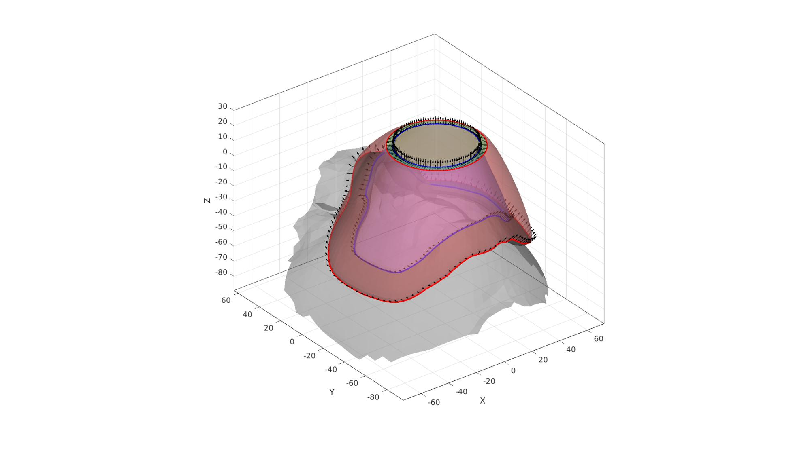
Join and merge mask body components
[F_mask,V_mask,C_mask]=joinElementSets({Ft,Fd1,Fd2,Fdt,Fc},{Vt,Vd1,Vd2,Vdt,Vc});
[F_mask,V_mask]=mergeVertices(F_mask,V_mask);
[F_mask,V_mask]=patchCleanUnused(F_mask,V_mask);
cFigure; hold on; gpatch(Ff,Vf,'w','none',1); % gpatch(Fb,V,'w','none',1); gpatch(F_mask,V_mask,'bw','none',1); gpatch(F_rim,V_rim,'kw','none',1); axisGeom; camlight headlight; view(2); % colormap spectral; icolorbar; drawnow;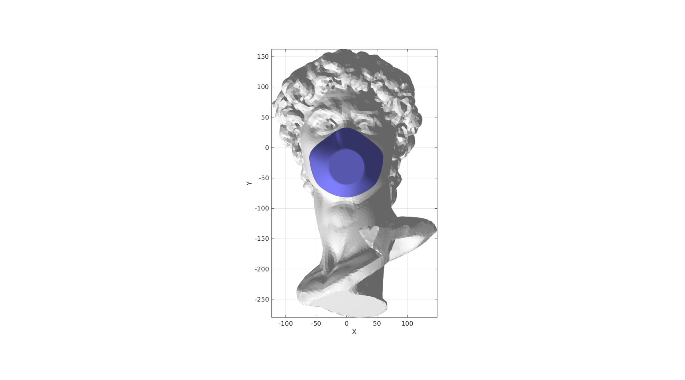
cFigure; hold on; gpatch(Ff,Vf,'w','none',1); % gpatch(Fb,V,'w','none',1); % gpatch(F_mask,V_mask,'gw','none',0.5); gpatch(F_rim,V_rim,'kw','none',1); axisGeom; camlight headlight; drawnow;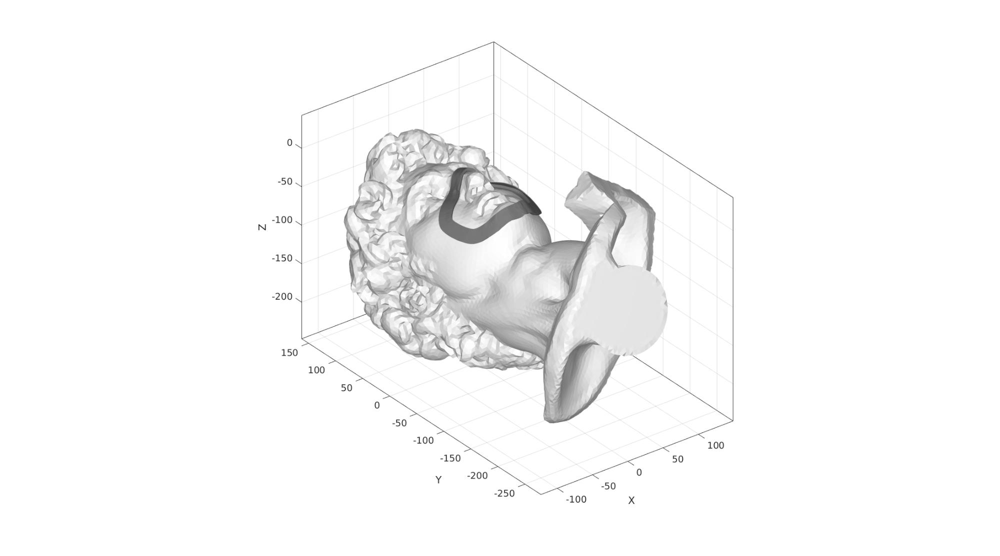
cFigure; hold on; % gpatch(Fp1,V,'w','none',1); gpatch(F_mask,V_mask,'bw','none',1); gpatch(F_rim,V_rim,'gw','none',1); axisGeom; camlight headlight; view(2); drawnow;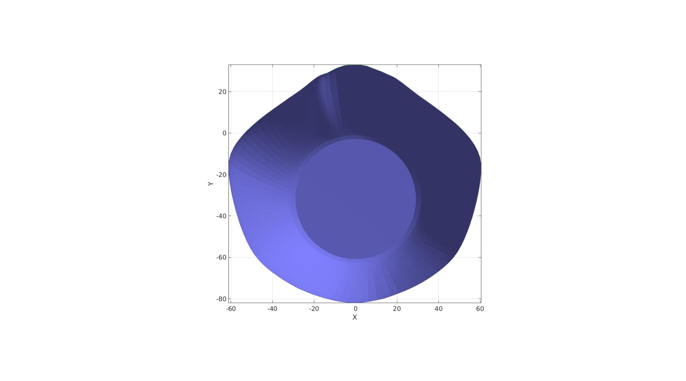
cFigure; hold on; % gpatch(Fb,V,'w','none',0.9); gpatch(F_rim,V_rim,C_rim,'k',1); % patchNormPlot(F_rim,V_rim); axisGeom; camlight headlight; view(2); colormap gjet; icolorbar; drawnow;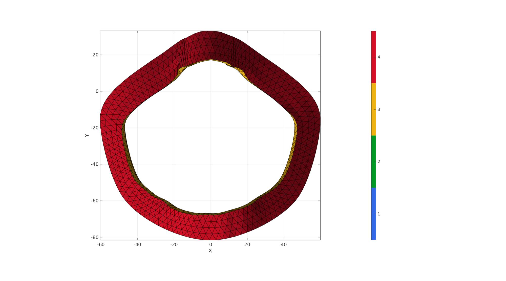
[V_regions]=getInnerPoint(F_rim,V_rim); % Define region points
cFigure; hold on; gpatch(F_rim,V_rim,C_rim,'k',1); % plotV(V_regions,'r.','MarkerSize',markerSize1) axisGeom; camlight headlight; view(2); drawnow;
[regionA]=tetVolMeanEst(F_rim,V_rim); %Volume for regular tets inputStruct.stringOpt='-pq1.2AaY'; inputStruct.Faces=F_rim; inputStruct.Nodes=V_rim; inputStruct.holePoints=[]; inputStruct.faceBoundaryMarker=C_rim; %Face boundary markers inputStruct.regionPoints=V_regions; %region points inputStruct.regionA=regionA; % Mesh model using tetrahedral elements using tetGen [meshOutput]=runTetGen(inputStruct); %Run tetGen
%%%%%%%%%%%%%%%%%%%%%%%%%%%%%%%%%%%%%%%%%%%%% --- TETGEN Tetrahedral meshing --- 27-Apr-2023 16:34:37 %%%%%%%%%%%%%%%%%%%%%%%%%%%%%%%%%%%%%%%%%%%%% --- Writing SMESH file --- 27-Apr-2023 16:34:37 ----> Adding node field ----> Adding facet field ----> Adding holes specification ----> Adding region specification --- Done --- 27-Apr-2023 16:34:37 --- Running TetGen to mesh input boundary--- 27-Apr-2023 16:34:37 Opening /mnt/data/MATLAB/GIBBON/data/temp/temp.smesh. Delaunizing vertices... Delaunay seconds: 0.006364 Creating surface mesh ... Surface mesh seconds: 0.002057 Recovering boundaries... Boundary recovery seconds: 0.004818 Removing exterior tetrahedra ... Spreading region attributes. Exterior tets removal seconds: 0.002076 Recovering Delaunayness... Delaunay recovery seconds: 0.001725 Refining mesh... 1759 insertions, added 497 points, 6317 tetrahedra in queue. 585 insertions, added 23 points, 226 tetrahedra in queue. 780 insertions, added 17 points, 558 tetrahedra in queue. Refinement seconds: 0.021674 Smoothing vertices... Mesh smoothing seconds: 0.019916 Improving mesh... Mesh improvement seconds: 0.002095 Writing /mnt/data/MATLAB/GIBBON/data/temp/temp.1.node. Writing /mnt/data/MATLAB/GIBBON/data/temp/temp.1.ele. Writing /mnt/data/MATLAB/GIBBON/data/temp/temp.1.face. Writing /mnt/data/MATLAB/GIBBON/data/temp/temp.1.edge. Output seconds: 0.020412 Total running seconds: 0.081298 Statistics: Input points: 1320 Input facets: 2640 Input segments: 3960 Input holes: 0 Input regions: 1 Mesh points: 1864 Mesh tetrahedra: 6859 Mesh faces: 15038 Mesh faces on exterior boundary: 2640 Mesh faces on input facets: 2640 Mesh edges on input segments: 3960 Steiner points inside domain: 544 --- Done --- 27-Apr-2023 16:34:37 %%%%%%%%%%%%%%%%%%%%%%%%%%%%%%%%%%%%%%%%%%%%% --- Importing TetGen files --- 27-Apr-2023 16:34:37 --- Done --- 27-Apr-2023 16:34:37
Access model element and patch data
Fb_rim=meshOutput.facesBoundary;
Cb_rim=meshOutput.boundaryMarker;
V_rim=meshOutput.nodes;
E_rim=meshOutput.elements;
% Visualizing mesh using |meshView|, see also |anim8|
meshView(meshOutput);
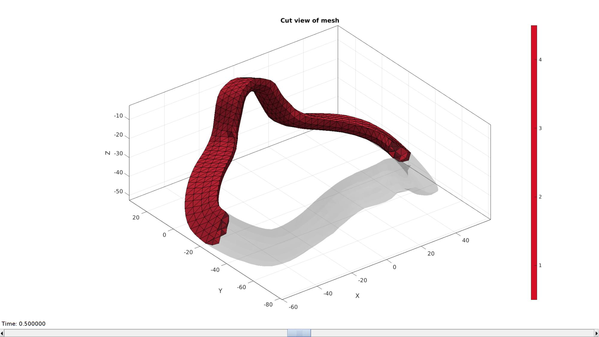 Join node sets
V_rim(:,3)=V_rim(:,3)+initialOffset; Fb_rim=Fb_rim+size(V,1); E_rim=E_rim+size(V,1); V=[V;V_rim];
cFigure; gpatch(F,V,'w','k',1); gpatch(Fb_rim,V,Cb_rim,'k',1); axisGeom; colormap gjet; icolorbar; camlight headlight; drawnow;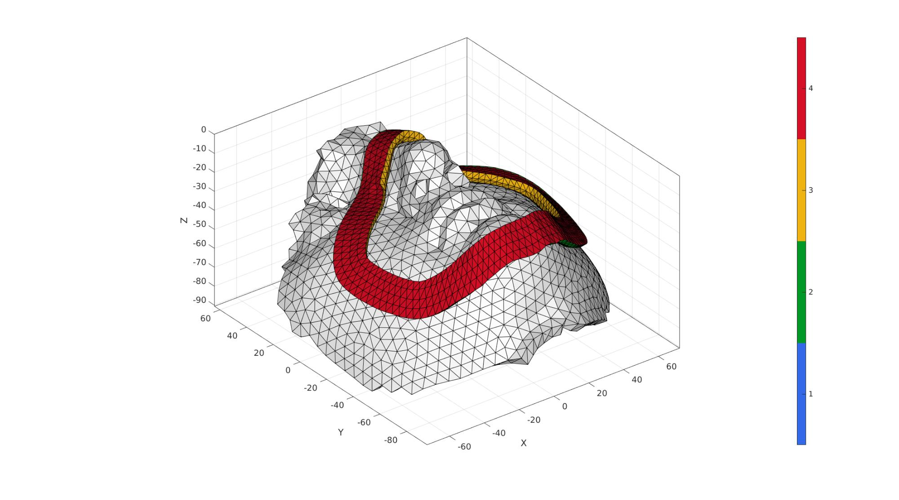
Define contact surfaces
% The rigid primary surface of the sphere F_contact_primary=fliplr(Fb_rim(Cb_rim~=4,:)); % The deformable secondary surface of the slab Fb_contact=Fb(Cb==1,:); V_Fb_centre=patchCentre(Fb_contact,V); D=minDist(V_Fb_centre,V_rim); logicSecondary=D<=(2*pointSpacingTissue); logicSecondary=triSurfLogicSharpFix(Fb_contact,logicSecondary,3); F_contact_secondary=fliplr(Fb_contact(logicSecondary,:));
Visualize contact surfaces
cFigure; hold on; title('Contact sets and normal directions','FontSize',fontSize); gpatch(Fb,V,'kw','none',0.5); hl(1)=gpatch(F_contact_primary,V,'gw','k',1); patchNormPlot(F_contact_primary,V); hl(2)=gpatch(F_contact_secondary,V,'rw','k',1); patchNormPlot(F_contact_secondary,V); legend(hl,{'Primary','secondary'}); axisGeom(gca,fontSize); camlight headlight; drawnow;

Define boundary conditions
%Supported nodes bcSupportList=unique(Fb(Cb==2,:)); %Prescribed displacement nodes bcPrescribeList=unique(Fb_rim(Cb_rim==4,:));
Visualize BC's
hf=cFigure; hold on; % title('Boundary conditions model','FontSize',fontSize); gpatch(Fb,V,'kw','none',faceAlpha2); gpatch(Fb_rim(Cb_rim~=4,:),V,'kw','none',faceAlpha2); gpatch(Fb_rim(Cb_rim==4,:),V,'rw','none',1); gpatch(Fb(Cb==2,:),V,'kw','none',1); hl2(1)=plotV(V(bcPrescribeList,:),'r.','MarkerSize',markerSize2); hl2(2)=plotV(V(bcSupportList,:),'k.','MarkerSize',markerSize2); legend(hl2,{'BC prescribe','BC support'}); axisGeom(gca,fontSize); camlight headlight; drawnow;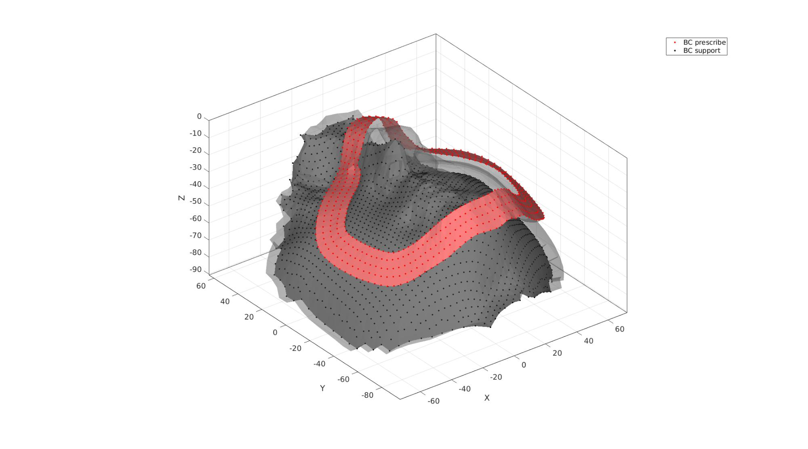
Defining the FEBio input structure
See also febioStructTemplate and febioStruct2xml and the FEBio user manual.
%Get a template with default settings [febio_spec]=febioStructTemplate; %febio_spec version febio_spec.ATTR.version='4.0'; %Module section febio_spec.Module.ATTR.type='solid'; %Control section febio_spec.Control.analysis='STATIC'; febio_spec.Control.time_steps=numTimeSteps; febio_spec.Control.step_size=1/numTimeSteps; febio_spec.Control.solver.max_refs=max_refs; febio_spec.Control.solver.qn_method.max_ups=max_ups; febio_spec.Control.solver.symmetric_stiffness=symmetric_stiffness; febio_spec.Control.time_stepper.dtmin=dtmin; febio_spec.Control.time_stepper.dtmax=dtmax; febio_spec.Control.time_stepper.max_retries=max_retries; febio_spec.Control.time_stepper.opt_iter=opt_iter; %Material section materialName1='Material1'; febio_spec.Material.material{1}.ATTR.name=materialName1; febio_spec.Material.material{1}.ATTR.type='Ogden unconstrained'; febio_spec.Material.material{1}.ATTR.id=1; febio_spec.Material.material{1}.c1=c1_tissue; febio_spec.Material.material{1}.m1=m1_tissue; febio_spec.Material.material{1}.c2=c1_tissue; febio_spec.Material.material{1}.m2=-m1_tissue; febio_spec.Material.material{1}.cp=k_tissue; materialName2='Material2'; febio_spec.Material.material{2}.ATTR.name=materialName2; febio_spec.Material.material{2}.ATTR.type='Ogden unconstrained'; febio_spec.Material.material{2}.ATTR.id=2; febio_spec.Material.material{2}.c1=c1_rim; febio_spec.Material.material{2}.m1=m1_rim; febio_spec.Material.material{2}.c2=c1_rim; febio_spec.Material.material{2}.m2=-m1_rim; febio_spec.Material.material{2}.cp=k_rim; % Mesh section % -> Nodes febio_spec.Mesh.Nodes{1}.ATTR.name='All'; %The node set name febio_spec.Mesh.Nodes{1}.node.ATTR.id=(1:size(V,1))'; %The node id's febio_spec.Mesh.Nodes{1}.node.VAL=V; %The nodel coordinates % -> Elements partName1='Part1'; febio_spec.Mesh.Elements{1}.ATTR.name=partName1; %Name of this part febio_spec.Mesh.Elements{1}.ATTR.type='tet4'; %Element type febio_spec.Mesh.Elements{1}.elem.ATTR.id=(1:1:size(E_face,1))'; %Element id's febio_spec.Mesh.Elements{1}.elem.VAL=E_face; %The element matrix partName2='Part2'; febio_spec.Mesh.Elements{2}.ATTR.name=partName2; %Name of this part febio_spec.Mesh.Elements{2}.ATTR.type='tet4'; %Element type febio_spec.Mesh.Elements{2}.elem.ATTR.id=size(E_face,1)+(1:1:size(E_rim,1))'; %Element id's febio_spec.Mesh.Elements{2}.elem.VAL=E_rim; %The element matrix % -> NodeSets nodeSetName1='bcSupportList'; febio_spec.Mesh.NodeSet{1}.ATTR.name=nodeSetName1; febio_spec.Mesh.NodeSet{1}.VAL=mrow(bcSupportList); nodeSetName2='bcPrescribeList'; febio_spec.Mesh.NodeSet{2}.ATTR.name=nodeSetName2; febio_spec.Mesh.NodeSet{2}.VAL=mrow(bcPrescribeList); %MeshDomains section febio_spec.MeshDomains.SolidDomain{1}.ATTR.name=partName1; febio_spec.MeshDomains.SolidDomain{1}.ATTR.mat=materialName1; febio_spec.MeshDomains.SolidDomain{2}.ATTR.name=partName2; febio_spec.MeshDomains.SolidDomain{2}.ATTR.mat=materialName2; % -> Surfaces surfaceName1='contactSurface1'; febio_spec.Mesh.Surface{1}.ATTR.name=surfaceName1; febio_spec.Mesh.Surface{1}.tri3.ATTR.id=(1:1:size(F_contact_primary,1))'; febio_spec.Mesh.Surface{1}.tri3.VAL=F_contact_primary; surfaceName2='contactSurface2'; febio_spec.Mesh.Surface{2}.ATTR.name=surfaceName2; febio_spec.Mesh.Surface{2}.tri3.ATTR.id=(1:1:size(F_contact_secondary,1))'; febio_spec.Mesh.Surface{2}.tri3.VAL=F_contact_secondary; % -> Surface pairs contactPairName='Contact1'; febio_spec.Mesh.SurfacePair{1}.ATTR.name=contactPairName; febio_spec.Mesh.SurfacePair{1}.primary=surfaceName1; febio_spec.Mesh.SurfacePair{1}.secondary=surfaceName2; %Boundary condition section % -> Fix boundary conditions febio_spec.Boundary.bc{1}.ATTR.name='zero_displacement_xyz'; febio_spec.Boundary.bc{1}.ATTR.type='zero displacement'; febio_spec.Boundary.bc{1}.ATTR.node_set=nodeSetName1; febio_spec.Boundary.bc{1}.x_dof=1; febio_spec.Boundary.bc{1}.y_dof=1; febio_spec.Boundary.bc{1}.z_dof=1; febio_spec.Boundary.bc{2}.ATTR.name='zero_displacement_xy'; febio_spec.Boundary.bc{2}.ATTR.type='zero displacement'; febio_spec.Boundary.bc{2}.ATTR.node_set=nodeSetName2; febio_spec.Boundary.bc{2}.x_dof=1; febio_spec.Boundary.bc{2}.y_dof=1; febio_spec.Boundary.bc{2}.z_dof=0; febio_spec.Boundary.bc{3}.ATTR.name='prescibed_displacement_z'; febio_spec.Boundary.bc{3}.ATTR.type='prescribed displacement'; febio_spec.Boundary.bc{3}.ATTR.node_set=nodeSetName2; febio_spec.Boundary.bc{3}.dof='z'; febio_spec.Boundary.bc{3}.value.ATTR.lc=1; febio_spec.Boundary.bc{3}.value.VAL=displacementMagnitude_z; febio_spec.Boundary.bc{3}.relative=0; %Contact section febio_spec.Contact.contact{1}.ATTR.type='sliding-elastic'; febio_spec.Contact.contact{1}.ATTR.surface_pair=contactPairName; febio_spec.Contact.contact{1}.two_pass=0; febio_spec.Contact.contact{1}.laugon=laugon; febio_spec.Contact.contact{1}.tolerance=0.2; febio_spec.Contact.contact{1}.gaptol=0; febio_spec.Contact.contact{1}.minaug=minaug; febio_spec.Contact.contact{1}.maxaug=maxaug; febio_spec.Contact.contact{1}.search_tol=0.01; febio_spec.Contact.contact{1}.search_radius=0.1*sqrt(sum((max(V,[],1)-min(V,[],1)).^2,2)); febio_spec.Contact.contact{1}.symmetric_stiffness=0; febio_spec.Contact.contact{1}.auto_penalty=1; febio_spec.Contact.contact{1}.penalty=contactPenalty; febio_spec.Contact.contact{1}.fric_coeff=fric_coeff; %LoadData section % -> load_controller febio_spec.LoadData.load_controller{1}.ATTR.name='LC_1'; febio_spec.LoadData.load_controller{1}.ATTR.id=1; febio_spec.LoadData.load_controller{1}.ATTR.type='loadcurve'; febio_spec.LoadData.load_controller{1}.interpolate='LINEAR'; %febio_spec.LoadData.load_controller{1}.extend='CONSTANT'; febio_spec.LoadData.load_controller{1}.points.pt.VAL=[0 0; 1 1]; %Output section % -> log file febio_spec.Output.logfile.ATTR.file=febioLogFileName; febio_spec.Output.logfile.node_data{1}.ATTR.file=febioLogFileName_disp; febio_spec.Output.logfile.node_data{1}.ATTR.data='ux;uy;uz'; febio_spec.Output.logfile.node_data{1}.ATTR.delim=','; febio_spec.Output.logfile.node_data{2}.ATTR.file=febioLogFileName_force; febio_spec.Output.logfile.node_data{2}.ATTR.data='Rx;Ry;Rz'; febio_spec.Output.logfile.node_data{2}.ATTR.delim=','; febio_spec.Output.logfile.element_data{1}.ATTR.file=febioLogFileName_strainEnergy; febio_spec.Output.logfile.element_data{1}.ATTR.data='sed'; febio_spec.Output.logfile.element_data{1}.ATTR.delim=','; febio_spec.Output.logfile.element_data{1}.VAL=1:1:size(E_face,1); % Plotfile section febio_spec.Output.plotfile.compression=0;
Quick viewing of the FEBio input file structure
The febView function can be used to view the xml structure in a MATLAB figure window.
febView(febio_spec); %Viewing the febio file
Exporting the FEBio input file
Exporting the febio_spec structure to an FEBio input file is done using the febioStruct2xml function.
febioStruct2xml(febio_spec,febioFebFileName); %Exporting to file and domNode %system(['gedit ',febioFebFileName,' &']);
Running the FEBio analysis
To run the analysis defined by the created FEBio input file the runMonitorFEBio function is used. The input for this function is a structure defining job settings e.g. the FEBio input file name. The optional output runFlag informs the user if the analysis was run succesfully.
febioAnalysis.run_filename=febioFebFileName; %The input file name febioAnalysis.run_logname=febioLogFileName; %The name for the log file febioAnalysis.disp_on=1; %Display information on the command window febioAnalysis.runMode=runMode; febioAnalysis.maxLogCheckTime=10; %Max log file checking time [runFlag]=runMonitorFEBio(febioAnalysis);%START FEBio NOW!!!!!!!!
%%%%%%%%%%%%%%%%%%%%%%%%%%%%%%%%%%%%%%%%%%%%%%%%%%%%%%%%%%%%%%%%%%%%%%%%%%%
--------> RUNNING/MONITORING FEBIO JOB <-------- 27-Apr-2023 16:34:48
FEBio path: /home/kevin/FEBioStudio2/bin/febio4
# Attempt removal of existing log files 27-Apr-2023 16:34:48
* Removal succesful 27-Apr-2023 16:34:48
# Attempt removal of existing .xplt files 27-Apr-2023 16:34:48
* Removal succesful 27-Apr-2023 16:34:48
# Starting FEBio... 27-Apr-2023 16:34:48
Max. total analysis time is: Inf s
* Waiting for log file creation 27-Apr-2023 16:34:49
Max. wait time: 10 s
* Log file found. 27-Apr-2023 16:34:49
# Parsing log file... 27-Apr-2023 16:34:49
number of iterations : 5 27-Apr-2023 16:34:50
number of reformations : 5 27-Apr-2023 16:34:50
------- converged at time : 0.0666667 27-Apr-2023 16:34:50
number of iterations : 4 27-Apr-2023 16:34:51
number of reformations : 4 27-Apr-2023 16:34:51
------- converged at time : 0.133333 27-Apr-2023 16:34:51
number of iterations : 4 27-Apr-2023 16:34:51
number of reformations : 4 27-Apr-2023 16:34:51
------- converged at time : 0.2 27-Apr-2023 16:34:51
number of iterations : 4 27-Apr-2023 16:34:52
number of reformations : 4 27-Apr-2023 16:34:52
------- converged at time : 0.266667 27-Apr-2023 16:34:52
number of iterations : 4 27-Apr-2023 16:34:53
number of reformations : 4 27-Apr-2023 16:34:53
------- converged at time : 0.333333 27-Apr-2023 16:34:53
number of iterations : 4 27-Apr-2023 16:34:54
number of reformations : 4 27-Apr-2023 16:34:54
------- converged at time : 0.4 27-Apr-2023 16:34:54
number of iterations : 5 27-Apr-2023 16:34:54
number of reformations : 5 27-Apr-2023 16:34:54
------- converged at time : 0.466667 27-Apr-2023 16:34:54
number of iterations : 4 27-Apr-2023 16:34:55
number of reformations : 4 27-Apr-2023 16:34:55
------- converged at time : 0.533333 27-Apr-2023 16:34:55
number of iterations : 4 27-Apr-2023 16:34:56
number of reformations : 4 27-Apr-2023 16:34:56
------- converged at time : 0.6 27-Apr-2023 16:34:56
number of iterations : 4 27-Apr-2023 16:34:57
number of reformations : 4 27-Apr-2023 16:34:57
------- converged at time : 0.666667 27-Apr-2023 16:34:57
number of iterations : 5 27-Apr-2023 16:34:58
number of reformations : 5 27-Apr-2023 16:34:58
------- converged at time : 0.733333 27-Apr-2023 16:34:58
number of reformations : 5 27-Apr-2023 16:34:59
------- converged at time : 0.8 27-Apr-2023 16:34:59
number of iterations : 5 27-Apr-2023 16:34:59
number of reformations : 5 27-Apr-2023 16:34:59
------- converged at time : 0.866667 27-Apr-2023 16:34:59
number of iterations : 5 27-Apr-2023 16:35:00
number of reformations : 5 27-Apr-2023 16:35:00
------- converged at time : 0.933333 27-Apr-2023 16:35:00
number of iterations : 5 27-Apr-2023 16:35:01
number of reformations : 5 27-Apr-2023 16:35:01
------- converged at time : 1 27-Apr-2023 16:35:01
Elapsed time : 0:00:12 27-Apr-2023 16:35:01
N O R M A L T E R M I N A T I O N
# Done 27-Apr-2023 16:35:01
%%%%%%%%%%%%%%%%%%%%%%%%%%%%%%%%%%%%%%%%%%%%%%%%%%%%%%%%%%%%%%%%%%%%%%%%%%%
Import FEBio results
if runFlag==1 %i.e. a succesful run
Importing nodal displacements from a log file
dataStruct=importFEBio_logfile(fullfile(savePath,febioLogFileName_disp),0,1);
%Access data
N_disp_mat=dataStruct.data; %Displacement
timeVec=dataStruct.time; %Time
%Create deformed coordinate set
V_DEF=N_disp_mat+repmat(V,[1 1 size(N_disp_mat,3)]);
Importing element strain energies from a log file
dataStruct=importFEBio_logfile(fullfile(savePath,febioLogFileName_strainEnergy),0,1); %Element strain energy %Access data E_sed_mat=dataStruct.data;
Plotting the simulated results using anim8 to visualize and animate deformations
cMap_c=gjet(250);
cMap=[linspacen([1 1 1],cMap_c(1,:),50)'; cMap_c];
[CV]=faceToVertexMeasure(E_face,V,E_sed_mat(:,:,end));
% Create basic view and store graphics handle to initiate animation
hf=cFigure; %Open figure
gtitle([febioFebFileNamePart,': Press play to animate']);
gpatch(Ffc,Vf,cMap(1,:),'none',1)
hp1=gpatch(Fb(Cb==1,:),V_DEF(:,:,end),CV,'none',1); %Add graphics object to animate
hp1.FaceColor='Interp';
hp2=gpatch(Fb_rim,V_DEF(:,:,end),'w','none',0.25); %Add graphics object to animate
hp3=gpatch(F_mask,V_mask,'w','none',0.25);
axisGeom(gca,fontSize); camlight headlight;
colormap(cMap); colorbar;
caxis([0 max(E_sed_mat(:))/10]);
axis(axisLim(V_DEF)); %Set axis limits statically
axis tight;
% Set up animation features
animStruct.Time=timeVec; %The time vector
for qt=1:1:size(N_disp_mat,3) %Loop over time increments
[CV]=faceToVertexMeasure(E_face,V,E_sed_mat(:,:,qt));
DN=N_disp_mat(:,:,qt); %Current displacement
u=mean(DN(bcPrescribeList,:),1);
V_mask_def=V_mask+u(ones(size(V_mask,1),1),:);
%Set entries in animation structure
animStruct.Handles{qt}=[hp1 hp1 hp2 hp3]; %Handles of objects to animate
animStruct.Props{qt}={'Vertices','CData','Vertices','Vertices'}; %Properties of objects to animate
animStruct.Set{qt}={V_DEF(:,:,qt),CV,V_DEF(:,:,qt),V_mask_def}; %Property values for to set in order to animate
end
anim8(hf,animStruct); %Initiate animation feature
drawnow;
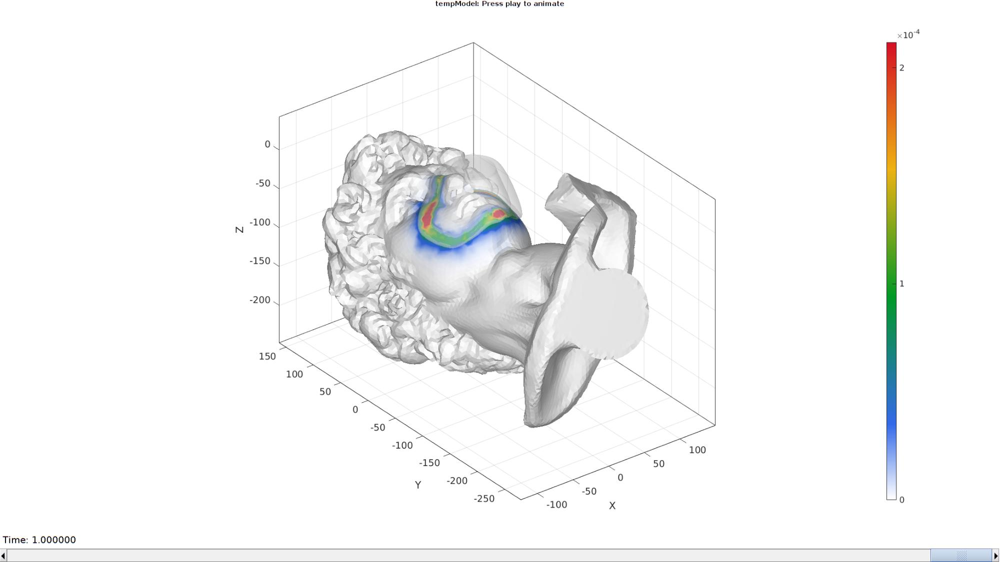 end
function [varargout]=traceToSurf(V1,N1,F2,V2,optionStructRayTrace) if size(N1,1)==1 N1=N1(ones(size(V1,1),1),:); end numPoints=size(V1,1); indFacesIntersect=nan(size(V1,1),2); for q=1:1:numPoints [P,indFaceIntersect,~,~]=triSurfRayTrace(V1(q,:),N1(q,:),F2,V2,optionStructRayTrace); if size(P,1)>1 [~,indMin]=minDist(V1(q,:),P); % [~,indMin]=min(d); P=P(indMin,:); indFaceIntersect=indFaceIntersect(indMin,:); end if ~isempty(P) V1(q,:)=P; indFacesIntersect(q,:)=indFaceIntersect; end end varargout{1}=V1; varargout{2}=indFacesIntersect; end function [Fr,Vr]=roundMesh(indCurve,Vm,Nm,nc,stripRadius) E=[indCurve(1:end)' [indCurve(2:end) indCurve(1)]']; ind1=indCurve(1:end)'; ind2=[indCurve(2:end) indCurve(1)]'; ind3=[indCurve(end) indCurve(1:end-1)]'; N1f=Vm(ind2,:)-Vm(ind1,:); N1b=Vm(ind1,:)-Vm(ind3,:); Ne=vecnormalize((N1f+N1b)/2); % Ne=vecnormalize(edgeVec(E,Vm)); Nf=-Nm(E(:,1),:);% -vecnormalize((Nm(E(:,1),:)+Nm(E(:,2),:))/2); Ne2=vecnormalize(cross(Nf,Ne)); X=repmat(Vm(E(:,1),1),1,nc); Y=repmat(Vm(E(:,1),2),1,nc); Z=repmat(Vm(E(:,1),3),1,nc); t=repmat(linspace(0,pi/2,nc),size(Z,1),1); X=X+stripRadius.*sin(t).*repmat(Ne2(:,1),1,nc)-stripRadius.*cos(t).*repmat(Nf(:,1),1,nc)+stripRadius.*repmat(Nf(:,1),1,nc); Y=Y+stripRadius.*sin(t).*repmat(Ne2(:,2),1,nc)-stripRadius.*cos(t).*repmat(Nf(:,2),1,nc)+stripRadius.*repmat(Nf(:,2),1,nc); Z=Z+stripRadius.*sin(t).*repmat(Ne2(:,3),1,nc)-stripRadius.*cos(t).*repmat(Nf(:,3),1,nc)+stripRadius.*repmat(Nf(:,3),1,nc); for q=2:1:size(X,2) v=evenlySampleCurve([X(:,q) Y(:,q) Z(:,q)],size(X,1),'pchip',1); X(:,q)=v(:,1); Y(:,q)=v(:,2); Z(:,q)=v(:,3); end [Fr,Vr]=grid2patch(X,Y,Z,[],[1 0 0]); end
function [F,V,X,Y,Z]=bezierLoft(P1,P4,N1,N4,pointSpacing,f) D12=sqrt(sum((P1-P4).^2,2)); numPoints=ceil(max(D12)./pointSpacing); if numPoints<2 numPoints=2; end P2=P1+D12.*f.*N1; P3=P4-D12.*f.*N4; X=zeros(numPoints,size(P1,1)); Y=zeros(numPoints,size(P1,1)); Z=zeros(numPoints,size(P1,1)); for q=1:1:size(P1,1) p=[P1(q,:); P2(q,:); P3(q,:); P4(q,:)]; %Control points V_bezier=bezierCurve(p,numPoints*2); %Compute bezier curve V_bezier=evenlySampleCurve(V_bezier,numPoints,'pchip'); %resample evenly X(:,q)=V_bezier(:,1); Y(:,q)=V_bezier(:,2); Z(:,q)=V_bezier(:,3); end %Create quad patch data [F,V] = surf2patch(X,Y,Z); I=[(1:size(Z,1)-1)' (1:size(Z,1)-1)' (2:size(Z,1))' (2:size(Z,1))' ]; J=[size(Z,2).*ones(size(Z,1)-1,1) ones(size(Z,1)-1,1) ones(size(Z,1)-1,1) size(Z,2).*ones(size(Z,1)-1,1)]; F_sub=sub2ind(size(Z),I,J); F=[F;F_sub]; F=fliplr(F); end

GIBBON www.gibboncode.org
Kevin Mattheus Moerman, gibbon.toolbox@gmail.com
GIBBON footer text
License: https://github.com/gibbonCode/GIBBON/blob/master/LICENSE
GIBBON: The Geometry and Image-based Bioengineering add-On. A toolbox for image segmentation, image-based modeling, meshing, and finite element analysis.
Copyright (C) 2006-2022 Kevin Mattheus Moerman and the GIBBON contributors
This program is free software: you can redistribute it and/or modify it under the terms of the GNU General Public License as published by the Free Software Foundation, either version 3 of the License, or (at your option) any later version.
This program is distributed in the hope that it will be useful, but WITHOUT ANY WARRANTY; without even the implied warranty of MERCHANTABILITY or FITNESS FOR A PARTICULAR PURPOSE. See the GNU General Public License for more details.
You should have received a copy of the GNU General Public License along with this program. If not, see http://www.gnu.org/licenses/.